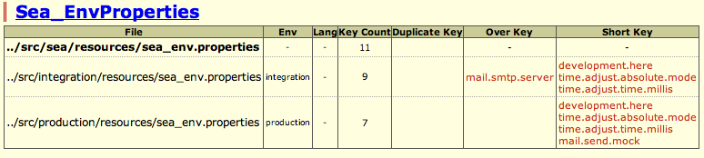

SAFlute自らインクリメンタル開発
${indexlist}現場からのさらなるニーズ
きっかけを作った二つの実装から全ては始まり、Web側は時代の流れとともに新たな思想も生まれ、SAFluteのコンセプトにフィットした現場からはどんどんニーズが出てきました。
- Action Callback
- 前後処理をInterceptorではなくActionで
- Action Json Handling
- JSONでのやり取りをオブジェクト型で
- Objective Typesafe Properties
- 継承できてタイプセーフなProperties
Action Callback
Interceptorの悩み
Interceptorによる横断処理には以下の二つの問題があると考えました。
- バリデーションよりも後
- バリデーションエラーになると実行されない
- Interceptorだらけ
- StackTraceの汚れ、追いかけづらく、親近感が湧かない
前後処理をAction自身に書く
ServletFilterでは、まだどのActionが実行されるかわからないので業務的な処理が書きづらく、そもそも扱いやすさでは Interceptor とあまり変わりがありません。
そこで、"Strutsを通過した後、バリデーションよりも前" のタイミングにて、Action自身に前後処理を書けるようにしています。 それを ActionCallback と呼んでいます。
それにより、すぐ近くにあって追いかけやすく親近感も湧き、Interceptorチェーンによる StackTrace も汚れもなく、そして、Actionクラスにてオーバーライドすることで簡単に挙動も変更することもできます。
godHandBefore(), godHandFinally()
SAFluteでは、全てのActionで共通のスーパークラスを継承することを推奨しています。 そのスーパークラスにて、godHandBefore(), godHandFinally()を実装すると、リクエスト時に前後処理として呼び出されます。
- godHandBefore()
- バリデーションよりも前のタイミング
- godHandFinally()
- 正常終了でもバリデーションエラーでも最後に必ず呼ばれる
e.g. Actionのスーパークラスにて、共通の前後処理を実装 @Java
@Override
public String godHandBefore(BrActionExecuteMeta executeMeta) {
final String path = super.godHandBefore(executeMeta);
if (path != null) {
return path;
}
final String sslRedirect = processSslRedirect(executeMeta);
if (sslRedirect != null) {
return sslRedirect;
}
processTrackingCode();
processUserAgent();
return null;
}
@Override
public void godHandFinally(BrActionExecuteMeta executeMeta) {
if (executeMeta.isForwardToJsp()) { // JSPへフォワードするなら
if (userWebBean == null) { // basically true, however just in case
final MemberUserBean userBean = getUserBean();
userWebBean = new MemberUserWebBean();
userWebBean.initialize(userBean, convertCoinLogic);
}
}
super.godHandFinally(executeMeta);
}
callbackBefore(), callbackFinally()
godHandXxx()は、スーパークラス用のメソッドとして用意しています(別にサブクラスでもオーバーライドできてしまいますが、やらないように)。 サブクラス、つまり、末端の具象クラスのためのメソッドとして、callbackBefore(), callbackFinally() を用意しています。
- callbackBefore()
- godHandBefore()と仕様は同じ
- callbackFinally()
- godHandFinally()と仕様は同じ
わざわざ分けているのは、画面開発者がオーバーライドするときに super 呼び忘れるトラブル(何も動かなくなる事件)が起きないようにするためで、super を呼び忘れても問題のないサブクラス専用のメソッドを提供しています。
わざと、サブクラス用の方が覚えやすいまともな名前にしています。 godHandなんてメソッド、通常のコード補完で見ることほぼないでしょうし、見つけてもきもちわるくてオーバーライドしようとは思わないでしょう。 (一方で、インパクトがありすぎてすぐに覚えちゃうという話もあるようですが...)
画面描画処理は callbackFinally() にて
サブクラスでの callback は、画面内リクエスト共通処理という扱いになります。 用途としては、例えば、画面描画のためのデータ準備処理を callbackFinally() で実装すると良いでしょう。
e.g. Actionのサブクラスにて、画面描画処理をcallbackFinally()で実装 @Java
@Override
public void callbackFinally(BrActionExecuteMeta executeMeta) {
if (executeMeta.isForwardToJsp()) { // JSPへフォワードするなら
... // そのJSPを描画するための準備処理
}
super.godHandFinally(executeMeta);
}
こうすると、バリデーションエラーのときでも実行されます。@Execute の input 属性には、JSPをそのまま指定してOKです。 (描画用の@Executeメソッドを用意してフォワードするやり方は、その入り口は外からは本来不要ですし、Interceptor もまた動いてしまいますし、何かとスパゲッティになりがちなので推奨されません)
e.g. 画面描画処理は callbackFinally() でやるので、inputは普通にJSPを指定 @Java
// input属性には、JSPを指定するのが流儀
@Execute(validate = "doValidate", input = path_Member_MemberEditJsp)
public void submit() {
...;
}
認証チェックや業務例外ハンドリングなどなど
もろもろ ActionCallback で処理を行っています。(Interceptorを "あまり" 使わないがSAFluteの流儀)
SAFluteのフレームワーク(TypicalBaseAction)にて、既に以下の処理が ActionCallback に組み込まれています。
- DBFluteの共通カラム自動設定のための AccessContext の初期化
- DBFluteのSQL呼び出しActionのSQLコメントへの埋め込み CallbackContext の初期化
- DBFluteのリクエスト内SQL発行階数のカウント CallbackContext の初期化とロギング処理
- ログインチェック、自動ログインも含む
- 業務例外のハンドリング
- Responseに no cache を付与
Action Json Handling
JsonParameter
ActionFormのプロパティに @JsonParameter を付けると、リクエストパラメーターのJSON文字列をパースして、Beanにマッピングしてくれます。
e.g. JsonParameterでJSONをBeanで受け取る (ActionFormにて) @Java
@JsonParameter
public FooWebBean jsonBean;
JsonResponse
さらには Action の戻り値で、JSON をオブジェクトとして指定できるようにしています。 (自分で Response に write するのではなく、オブジェクト型を戻すだけ)
Actionの@Executeメソッドの戻り値の型を JsonResponse にして...
e.g. JsonResponseを戻す @Java
@Execute(validator = false)
public JsonResponse submit() { // application/json
FooWebBean bean = ...;
return new JsonResponse(bean); // JSONになって欲しいBeanを引数に
}
e.g. JSONP形式の JsonResponse を戻す @Java
@Execute(validator = false)
public JsonResponse submit() { // application/javascript
FooWebBean bean = ...;
return new JsonResponse(bean).asJsonp("callback");
}
XmlResponse (XMLも指定できます)
XMLも指定できます。Actionの@Executeメソッドの戻り値の型を XmlResponse にして...
e.g. XmlResponseを戻す @Java
@Execute(validator = false)
public XmlResponse submit() { // text/xml
String xmlStr = ...;
return new XmlResponse(xmlStr);
}
StreamResponse (というかStreamも)
Actionの@Executeメソッドの戻り値の型を StreamResponse にして...
e.g. StreamResponseを戻す (ダウンロードする) @Java
@Execute(validator = false)
public StreamResponse submit() { // application/octet-stream
InputStream ins = ...;
return new StreamResponse("dbflute.pdf").stream(ins);
}
Objective Typesafe Properties
Propertiesはとてもシンプル
プログラムにハードコードしたくないコンフィグや環境依存のコンフィグなどの管理に、Javaの古来からある Properties (.propertiesファイル) を利用しています。
Javaの経験の長い人であれば、Propertiesとは古いなぁと思われるかもしれません。 XMLに移り変わって、最近ではJSON形式でプロパティを管理する現場もあるかと思います。 ですが、Propertiesは構造を扱えない単なるkey-valueで、逆に不自由でとてもシンプルであるという一面に着目しました。
これはやめたい！diconの環境ごとの切り替え
とにかく一番避けたいと思ったのは、diconファイルなどDIコンテナのコンポーネント管理をするファイルに環境依存のコンフィグ値を埋め込んで、ローカル、結合、本番と切り分ける方法です。
e.g. これはやめたい！Diconファイルに環境依存の値を埋め込んで本番では切り替える @Dicon
<component name="foo" class="Foo">
<property name="key">bar</property>
</component>
diconファイルは、たまたまXMLファイルの形式をとっていますが、いわゆる設定ファイルというよりかは、コンポーネントの生成と依存関係のロジック だと捉えています。
クラス構造が変わったり、依存関係が変わったら修正する必要があります。 すると、時には環境依存のコンフィグ値は何も変わっていないのに本番用のファイルを修正しないといけないことも。 本番用のファイルは厳密には本番でしかテストできません。できるだけ修正する階数は減らしたいものです。 そして、環境依存のコンフィグ値は、間違いを起こしにくくチェックもしやすいシンプルな構造で管理したいものです。
Properties 切り替えに PropertiesHTML チェック ☆
SAFluteでは、環境依存のコンフィグ値を [アプリ名]_env.properties という Properties で管理して、環境ごとに切り替えます。 また、環境依存でないコンフィグ値も、統一性や管理のしやすさの面、そして、いざ環境依存に変わってもプログラムに影響がないように、同じく Properties で管理します。
e.g. リファレンス実装のMaihamaプロジェクトでの環境ごとのProperties @Directory
maihama-common
|-src/main/resources
| |-maihama_config.properties // 環境依存しないコンフィグ
| |-maihama_env.properties // ローカル環境用のコンフィグ (環境ごとにコピーされる)
|
|-src/main/integration
| |-maihama_env.properties // 結合環境用のコンフィグ
|
|-src/main/production
| |-maihama_env.properties // 本番環境用のコンフィグ
とはいえ、Propertiesの差分をDIFFツールなどで見ようとすると、なかなか見づらいものです。 なぜなら、value値は違う値が入っていて当然で差分ノイズが出てしまうからです。 これはXMLでもなんでもファイルを切り替えれば同じですが、Propertiesがシンプルで不自由がゆえに、それを支援する機能が利用できます。
DBFlute の PropertiesHTML を使って、キー値の差分をチェックすることができます。 どの環境のファイルに、どのキーが余計で、どのキーが足りていないかが一目瞭然です。 これを使って、環境ごとのコンフィグ値の追加や修正による作業ミスをチェックすることができます。
PropertiesHtmlのDIFF部分の例 
{kind=link}
"Propertiesは不自由である" というのがここで効きます。自由度が高すぎると、こういったチェックツールを作るのが大変になります。 (XMLの差分ドキュメントも作ろうともしましたが、ちょっと挫折しています...)
継承できる Properties ☆
通常の Properties のいやなところ、プロジェクト共通のプロパティもアプリ(ドメイン)ごとにコピーしないといけないところ。 コンフィグだけでなくバリデーションエラーなどの画面表示するメッセージ(いわゆるメッセージリソース)も、文言が変わったらアプリごとにコピーした Properties を修正しなければなりませんでした。
SAFluteでは、Propertiesを継承できるようにし、共通の .properties ファイルとアプリごとの .properties ファイルを分けながらも、Java側では同じインターフェースで取得できます。
e.g. リファレンス実装のMaihamaプロジェクトでのProperties継承構造 @Directory
maihama-common
|-src/main/resources
|-maihama_config.properties // スーパークラスならぬスーパーProperties
|-maihama_env.properties // さらにスーパーProperties
|-maihama_message.properties // 共通のメッセージリソース
maihama-dockside
|-src/main/resources
| |-dockside_config.properties // サブクラスならぬサブProperties
| |-dockside_message.properties // アプリ固有のメッセージリソース
e.g. maihama_config.properties に定義されてる foo.bar のプロパティを取得 @Java
// maihama_config のプロパティも docksideConfig インターフェースから取得できる
// (ここでは、"foo.bar" というキー値のプロパティを取得している)
String prop = docksideConfig.getFooBar();
ちなみに、環境依存しないPropertiesと環境依存するPropertiesも継承関係にあるため、移動しても呼び出し側プログラムを修正する必要はありません。
もちろん、プロパティをオーバーライドすることもできます。 プロパティの一行コメントに、@Overrideというアノテーションを付けるとオーバーライドできます。
e.g. @Overrideアノテーションを付けて明示的オーバーライド @Properties
# @Override fooとかbarとか適当な感じなのでこれはサンプルのプロパティ
foo.bar = ABC
@Overrideを付けずにオーバーライドすると、例外になります。 あくまで設定ファイルですから、暗黙のオーバーライドによるトラブルが発生しないようにしています。
タイプセーフな Properties ☆
そしてこれが一番の特徴です。Javaプログラムの中で、キー値をハードコードせずにプロパティ値を取得することができます。 DBFluteのFreeGenを使って、キー値に対応するメソッドを自動生成します。
e.g. FreeGenを使って Properties のインターフェースを自動生成 @Java
// "foo.bar" というプロパティがあったら getFooBar()
String prop = docksideConfig.getFooBar();
e.g. メッセージリソースのインターフェースも自動生成 @Java
DocksideMessages messages = createActionMessages();
if (...) { // Formの値をチェックして
// "errors.foo.bar" というプロパティがあったら addErrorsFooBar()
messages.addErrorsFooBar(...); // 引数はFormのプロパティ名と{0}などのパラメーター
}
自動生成時に参照したプロパティの値がtrue/falseであれば boolean を戻す isXxx() メソッドが、数値であれば Integer を戻す getXxxAsInteger() というメソッドも一緒に自動生成されます。
e.g. boolean を戻す Properties のメソッド @Java
// "foo.bar" というプロパティの値が true or false だったら isFooBar()
if (docksideConfig.isFooBar()) {
...
}
また、メソッドのJavaDocコメントには、キー値に加え、自動生成時に使ったプロパティ値と一行コメントを参考に載せています。 わざわざ .properties ファイルまで見に行かなくても、プログラミング中にそのプロパティがどんなものなのかを補完しながら理解することができます。
e.g. 自動生成された Properties のインターフェースのメソッドのJavaDoc @Java
/**
* Get the value for the key 'foo.bar'. <br />
* The value is, e.g. ABC <br />
* comment: fooとかbarとか適当な感じなのでこれはサンプルのプロパティ
* @return The value of found property. (NullAllowed: if null, not found)
*/
String getFooBar();
プロパティのキーを打ち間違えることもなく、プロパティのキーが変われば自動生成し直せばコンパイルエラーで検知、 そのプロパティを利用している箇所を洗い出したかったら、メソッドの呼び出し階層をIDE(Eclipseとか)で検索、そんな Properties です。